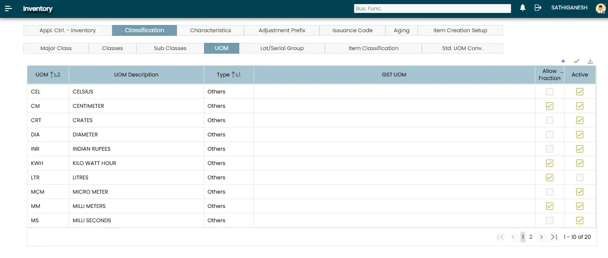

<div data-category="Inventory Control" data-title="UOM" data-updated="January 27, 2026" data-contributors="RoadmapIT" data-breadcrumb="Home,Inventory Control,UOM">
  <div class="page-content">
    <p>UOM is a term that is used to describe the physical unit (such as kg, dozen, meter, etc.) to measure and manage different items, User can use this screen to define the UOM (Unit of Measure). The UOM ID / code are fixed once user creates it and cannot be changed or deleted if it has any items linked to it. However, user can edit the descriptions of the UOMs as needed.</p>
    <h5>Navigation path:</h5>
    <p class="fs-6">Supply Chain Management \ Inventory \ Setup \ Setup - Inventory</p>
    
    <ul style="list-style-type: none; align-content: center">
      <li class="mouse-icon">
        Click
        <i class="bi bi-plus fs-4 mx-2 text-primary"></i>
        button to create a new UOM
      </li>
      <li class="mouse-icon">Enter the UOM (Units of Measurement).</li>
      <li class="mouse-icon">Enter the Description.</li>
      <li class="mouse-icon">Check the Fraction Flag if the UOM is handled in decimals</li>
      <li class="mouse-icon">Select the type based on the UOM</li>
      <li class="mouse-icon">Enter/Select the GST UOM.</li>
      <li class="mouse-icon">
        Click
        <i class="bi bi-check-lg fs-4 mx-1 text-success"></i>
        to save the UOM.
      </li>
    </ul>
  </div>
</div>
